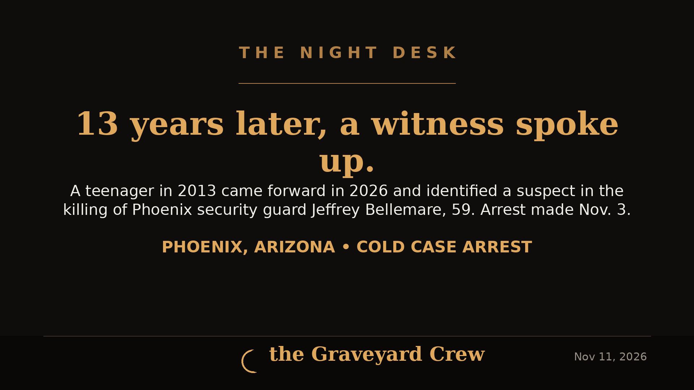
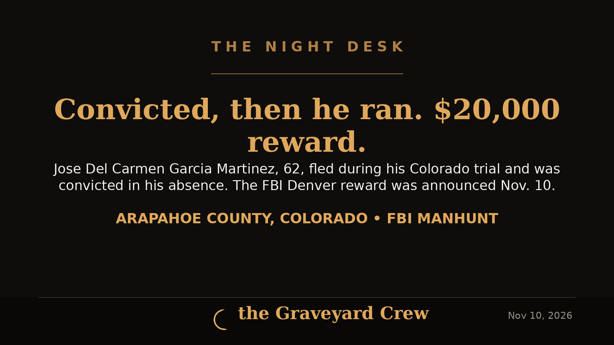
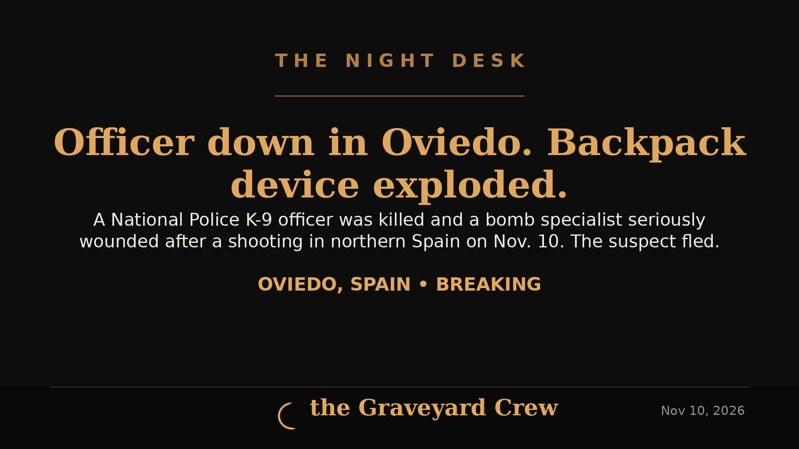
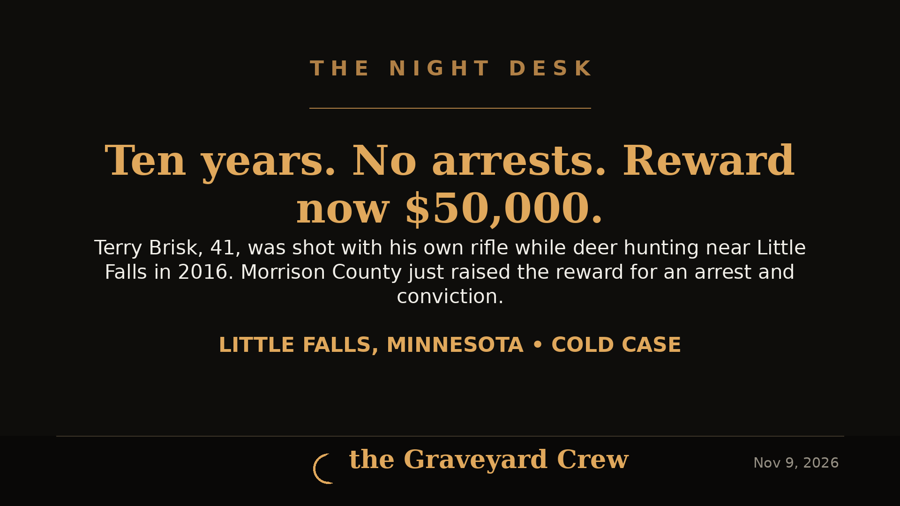
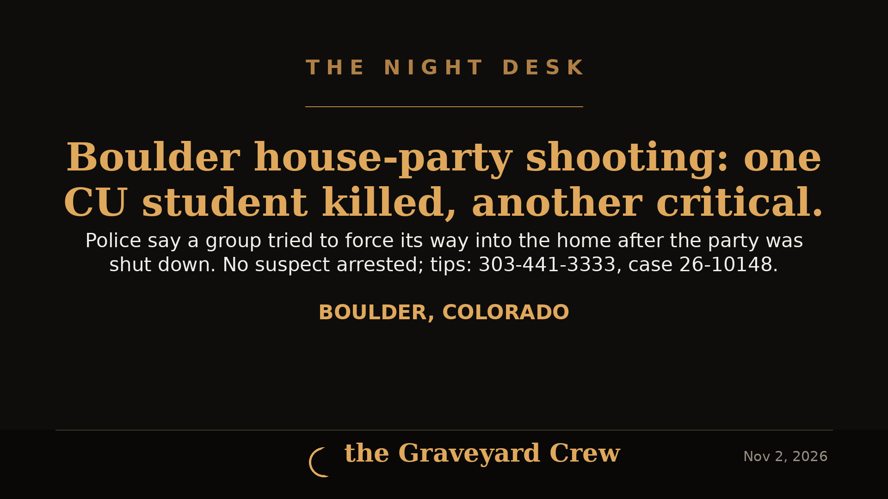
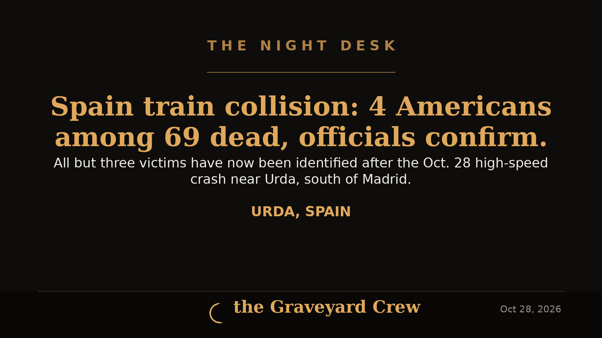

November 11, 2026
New witness leads to arrest in 2013 Phoenix cold case killing of security guard Jeffrey Bellemare
Phoenix police say a witness who was a teenager in 2013 came forward in early 2026 and identified Joe Alexander Gerardo, 43, in the Nov. 29, 2013 killing of security guard Jeffrey Bellemare, 59. Gerardo was arrested Nov. 3 in Globe and is held on $2 million bond on first-degree murder.
READ THE STORY →
November 10, 2026
FBI offers $20,000 reward for convicted fugitive Jose Del Carmen Garcia Martinez
FBI Denver announced a $20,000 reward on Nov. 10 for Jose Del Carmen Garcia Martinez, 62, who fled during his Arapahoe County trial, cut off his ankle monitor, and was convicted in his absence of sexually assaulting a 15-year-old girl with disabilities.
READ THE STORY →
November 10, 2026
Explosive device in a backpack kills a police officer in Oviedo, Spain
One Spanish National Police officer was killed and another seriously wounded on Nov. 10 when an explosive device in a backpack went off in Oviedo as officers responded to a shooting. Authorities said there was no indication yet of a terror link, and the suspect fled.
READ THE STORY →
November 09, 2026
Terry Brisk cold case — ten years unsolved, reward raised to $50,000
Terrence "Terry" Brisk, 41, was shot with his own hunting rifle on his parents' property near Little Falls, Minnesota, on Nov. 7, 2016. No one has been arrested in ten years. On Nov. 6, 2026, Morrison County Sheriff Shawn Larsen raised the reward to $50,000 for information leading to an arrest and conviction.
READ THE STORY →November 09, 2026
Russell Brand sentenced to 10½ years for rape and sexual assaults
Russell Brand was sentenced Monday at Southwark Crown Court to 10 years and six months in prison for raping one woman and sexually assaulting three others between 2004 and 2009. He must serve two-thirds of the sentence before release.
READ THE STORY →November 09, 2026
Russell Brand back at Southwark Crown Court for sentencing after rape conviction
Russell Brand, 51, returned to Southwark Crown Court in London on Monday to learn his sentence, four days after a jury convicted him of one count of rape and three counts of sexual assault. Prosecutors asked for 12 to 15 years on the rape count.
READ THE STORY →November 09, 2026
Krakow Main Square gunman dies in hospital after attack that killed six
Michał Oksiński, 24, who opened fire in Krakow's Main Square on Saturday, killing six people and wounding 15, died in hospital early Monday. Authorities say he is also believed to have killed his parents and his sister at the family home before driving to Krakow.
READ THE STORY →
November 05, 2026
Vienna homecoming shooting — eight more charged, two fugitives still on the run
At a Nov. 5 press conference, Dooly County Sheriff Craig Peavy, GBI Director Chris Hosey and FBI Atlanta SAC Marlo Graham announced eight more people charged in the Oct. 4 Vienna, Georgia homecoming block-party shooting that killed Ja'Quavion Jackson and Macaleb Jackson. Six were arrested; Brexton Esamuel Gaston, 19, of Cordele and Vanravious Rashad Williams, 34, of Perry remain at large and are considered armed and dangerous.
READ THE STORY →
November 04, 2026
Spirit Halloween shooting — teen publicly named, charged with two murders; prosecutors seek adult trial
The Solano County District Attorney's Office has publicly identified Monte Smith, 17, as the suspect in the Oct. 30 Spirit Halloween store shooting in Fairfield that killed pregnant mother of four Constance Hages, 31, and wounded six others. Smith faces two murder counts with a multiple-murder special circumstance. At his first court appearance on Nov. 4, a judge ordered him to remain in juvenile detention without bail and postponed his arraignment to Nov. 13; prosecutors are asking a judge to move his case to adult court.
READ THE STORY →
November 02, 2026
Moss Landing shooting — two dead, two injured near a closed California beach; victims not yet identified
Two people were killed and two others injured in a shooting along Jetty Road near Moss Landing State Beach early Monday, the Monterey County Sheriff's Office said. The victims have not been identified, no motive has been released, and investigators say there is no active threat to the community.
READ THE STORY →
November 02, 2026
Fairfield Spirit Halloween shooting — 17-year-old arrested in killing of pregnant woman; six others wounded
Fairfield police arrested a 17-year-old at his Suisun City home Monday in the Oct. 30 shooting inside a Spirit Halloween store that killed 31-year-old Constance Hages, who was pregnant, and wounded six others. The teen faces murder and attempted murder charges; police say they identified him within hours through surveillance footage but withheld it to protect the arrest.
READ THE STORY →
November 02, 2026
Boulder house-party shooting — CU student killed, another critical, police seek people seen on video
A 19-year-old University of Colorado student was killed and another 19-year-old student was critically injured in a shooting at a Halloween house party in Boulder's University Hill neighborhood late Saturday. Police have not arrested a suspect and are asking partygoers for photos, video and tips.
READ THE STORY →
November 02, 2026
Spain train collision — 4 Americans among 69 dead, all but three victims now identified
Four U.S. citizens were among the 69 people killed when a high-speed Renfe train slammed into the rear of a stationary Iryo train near Urda, Spain, on Oct. 28. Authorities said late Sunday that all but three of the victims have now been identified.
READ THE STORY →
November 02, 2026
Halloween night in East Lansing — 5 wounded in two shootings off the MSU campus
Five people were wounded in two separate shootings in East Lansing on Halloween night, Police Chief Jennifer Brown said at a Nov. 1 press conference. Four victims are stable and the fifth victim's status was unknown to police. Both shootings happened off campus and, MSU's president said, did not involve anyone affiliated with the university.
READ THE STORY →
November 01, 2026
Learjet goes down in a Palm Beach County neighborhood — all 9 aboard killed
A Learjet 60 flying from Austin to the Bahamas crashed near Greenacres, Florida, around 12:50 p.m. Sunday, killing all nine people aboard. Recordings captured the crew reporting turbulence and ice before a descent that topped 32,000 feet per minute. The NTSB is leading the investigation.
READ THE STORY →
November 01, 2026
Halloween night in Dallas — 4 dead, 15 injured in three Deep Ellum shootings
Four people were killed and 15 injured in three separate shootings in Dallas's Deep Ellum entertainment district early Sunday. Police Chief Daniel Comeaux says detectives are still working to determine whether the shootings were linked.
READ THE STORY →
November 01, 2026
Two shootings minutes apart after the Magic City Classic — 1 dead, 8 wounded in Birmingham
Gunfire broke out twice within minutes outside Legion Field after Saturday's Magic City Classic between Alabama A&M and Alabama State, killing one person and wounding eight. Mayor Randall Woodfin said Sunday a 17-year-old is in custody on a 48-hour hold, found with a gun fitted with a Glock conversion switch.
READ THE STORY →
November 01, 2026
Canada-wide manhunt after Toronto mansion home invasion — suspect was shot by his own accomplice, police say
Toronto police have identified Daijohn Richards, 23, as one of three suspects in the Oct. 29 Bridle Path home invasion that left a family of four injured. Police say Richards was accidentally shot in the shoulder by an accomplice, was treated at a hospital and released before investigators linked him to the attack, and is now wanted on a Canada-wide warrant.
READ THE STORY →
November 01, 2026
Portland man charged with attempted murder after shotgun fired at passing driver
Portland police say Marc W. Schaffer, 52, fired at least two shotgun rounds at a passing driver on North Commercial Avenue late Saturday morning. No one was injured, officers took him into custody within seven minutes, and investigators say the shooting was influenced by his perception of the driver's race.
READ THE STORY →
October 31, 2026
Nine Months On: Sheriff Says DNA Work Continues in the Nancy Guthrie Case
The Pima County Sheriff's Department issued a rare update on Friday: the Nancy Guthrie Task Force is still pushing DNA analysis with its labs, and investigators traveled to Florida this month to advance the case. No suspect has been named.
READ THE STORY →
October 31, 2026
Man, 21, shot dead inside Madison Heights Spirit Halloween after altercation — second fatal Spirit Halloween shooting that day
A 21-year-old Detroit man was shot multiple times inside the Spirit Halloween store on John R Road in Madison Heights, Michigan on Friday afternoon and later died. Police took a 21-year-old Oak Park man into custody and recovered a 9mm handgun; the case is headed to the Oakland County Prosecutor.
READ THE STORY →October 31, 2026
Multiple people found shot on South Hemlock Lane in Appleton, Wisconsin — no suspect in custody
Appleton police found multiple victims with apparent gunshot wounds in the 3400 block of South Hemlock Lane on Friday night. No suspect was in custody late Friday, and Midway Road was closed while officers worked the scene.
READ THE STORY →October 31, 2026
Congo Ebola deaths top 5,000 as fear of continent-wide spread mounts
The Associated Press reports 5,026 people have died out of 10,351 infected in Congo's Ebola outbreak, driven by the Bundibugyo strain, with cases now also reported in Kenya, Nigeria and Uganda.
READ THE STORY →October 31, 2026
Shooting at Solano Town Center Spirit Halloween in Fairfield leaves 1 dead, 6 wounded
One person was killed and six others were wounded in a shooting at the Spirit Halloween store at Solano Town Center in Fairfield, California. The suspect had not been identified when the Associated Press last updated its report early Friday.
READ THE STORY →
October 31, 2026
Fugitive inmate captured in Arkansas after 29-hour manhunt
Rodney Smith, 41, escaped the Brinkley Police Department detention center Thursday morning after allegedly assaulting law enforcement personnel and taking an officer's Taser. Arkansas State Police troopers found him Friday afternoon at a farm shop in Marianna and took him into custody without incident.
READ THE STORY →Showing the latest 25 — browse the full archive →